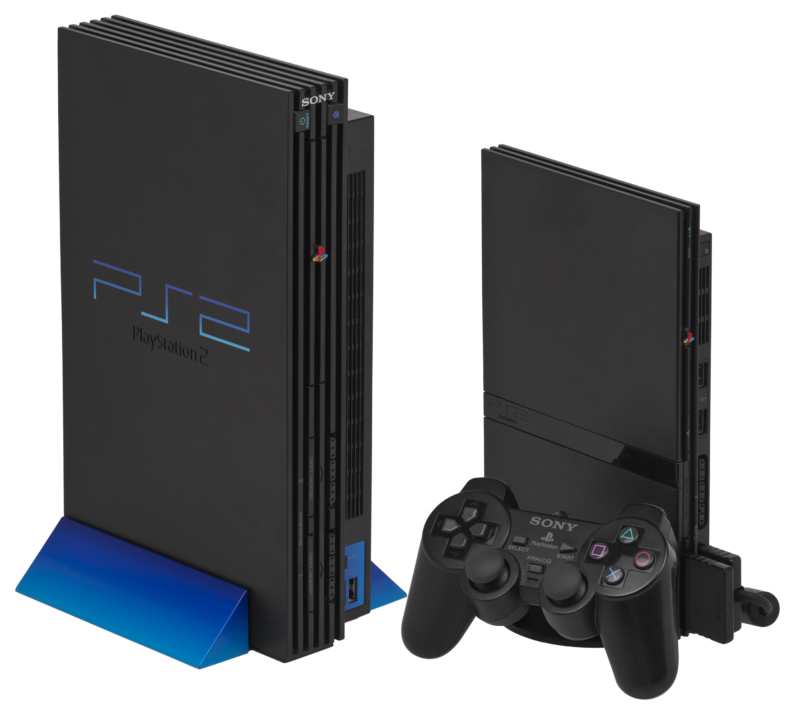

Эпоха шестого поколения игровых систем
(также её называют эпохой 128-разрядных игровых систем) относится к компьютерным играм и игровым приставкам,
а также наладонным игровым устройствам, которые стали появляться на рубеже XXI века.
Список платформ шестого поколения включает
Sega Dreamcast, Sony PlayStation 2, Nintendo GameCube и Microsoft Xbox.
Хотя были ещё консоли от Atari (Atari Flashback),и от Sony (PSX dvr),
но они не участвовали в войне. Эта эпоха началась 27 ноября 1998 года,
с выпуском Dreamcast, после которой, в марте 2000 была выпущена PlayStation 2.
В марте 2001 года производство Dreamcast было прекращено,
и в том же году начались продажи Nintendo GameCube — в сентябре, и Xbox — в ноябре.
Даже после начала седьмого поколения консолей, шестое поколение не закончилось,
поскольку производство PlayStation 2 прекратилось только в конце декабря 2012 года.
(1998—2013) 